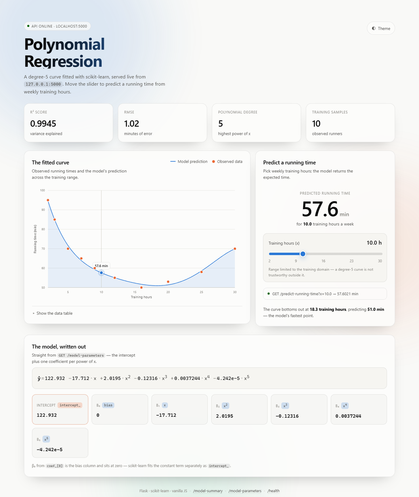

Vibe Coding: from a model to a live website
Today we barely typed any code. We set up VS Code, signed in to Copilot and Claude, and described what we wanted in plain language. We started with a tic-tac-toe game to get the feel of it, then took the polynomial regression model from our own repo, wrapped it in a Flask REST API, and vibe-coded a website that calls it.
Open Class Code
Today produced two repositories. The first was the warm-up, the second is the real project:
VS Code + Live Server
Everything today happens inside one editor. Two installs and one extension:
To install an extension: click the Extensions icon in the left bar (or Ctrl+Shift+X), type the name, press Install.
| Extension | What it gives you |
|---|---|
| Live Server | Right-click index.html → Open with Live Server. Serves the folder on http://127.0.0.1:5500 and reloads the browser every time you save. |
| Python | Run and debug .py files, pick the interpreter, get IntelliSense. |
| GitHub Copilot | Inline AI completions as you type. See the next slide. |
index.html directly gives you a file:// address. Browsers block fetch from file:// for security, so the moment your page calls an API it fails. Live Server gives you a real http:// address and the auto-reload is a nice bonus.Enrolling in Copilot & Claude
Two assistants, both living inside VS Code:
| Tool | How to get it | How you use it |
|---|---|---|
| GitHub Copilot | A GitHub account → enable Copilot on github.com → install the GitHub Copilot and GitHub Copilot Chat extensions → sign in when VS Code asks. Free for verified students through GitHub Education. | Ghost text appears as you type — press Tab to accept, Esc to dismiss. Ctrl+I opens inline chat on the selected code. |
| Claude | An account at claude.ai. Use it in the browser, or install the Claude extension / Claude Code to work directly on the files in your folder. |
Describe a whole feature in a sentence or two and let it write or edit the files, then read what changed. |
Warm-up: the XO game
Before touching the model we built something with no stakes — tic tac toe. One prompt, three files, and a game that runs in the browser:
What came back was NEXUS · Starship Tic Tac Toe:
The three files split the job the way any web page does:
| File | Job |
|---|---|
| index.html | Structure — what is on the page: the 9 cells, the score panel, the buttons. |
| styles.css | Appearance — colours, glow, layout, the animations when a ship lands. |
| script.js | Behaviour — what happens on click: place a ship, check for a win, let the computer move. |
To play it: open the folder in VS Code, right-click index_claude.html, Open with Live Server.
The site we built
Same loop as the game, but this time on top of a real model. We took the polynomial regression from July 15, asked for two functions around it, wrapped those in a Flask REST API, and vibe-coded a front end that calls it.
This is the finished thing, running on localhost:5000 — every number on the page came out of the API:

| On the page | Comes from |
|---|---|
| R² 0.9945 · RMSE 1.02 | GET /model-summary |
| The curve + the 10 dots | GET /model-summary |
| 57.6 min for 10 hours | GET /predict-running-time?x=10 |
| The written-out equation | GET /model-parameters |
fetch is doing, and why the page has to be served from port 5000? That is the Vibe Coding deck.